← Laufstrecken
Castrisch Reichenau
Wegname:
Castrisch_Reichenau
Streckenart:
Laufstrecke
Kategorie:
Berglauf
Region:
GR Mitte
Streckenlänge:
22 Km
Hm +:
750 hm
Hm -:
650 hm
Datum:
04.07.26
Kurzbeschrieb:
Castrisch - Rheinschlucht - Versam - Trin Digg - Reichenau
Link SchweizMobil:
Bild SchweizMobil:
Bericht:
Wir treffen uns alle am Bahnhof Reichenau für den 9:04 Zug Richtung Castrisch.
Nach ausgiebigen Diskussionen über die korrekten Himmelsrichtungen vor allem zwischen Jean-Marie und mir (!), und richtige Angaben über den genauen Ort des Parkplatzes (!), besteigen wir den sehr gut gefüllten Zug.
In Castrisch starten wir Richtung Vorderrhein, welchem wir stets folgen. Dazwischen wird immer wieder mal kurz angehalten um die Aussicht zu geniessen etc., sowie Sylvia Zeit für ihr Schlamm-Fussbad zu lassen. Letztgenannte trabt dann zu unserem Erstaunen zuerst locker Barfuss mit uns weiter! Nach einigen Minuten wird dann doch wieder zu den Laufschuhen gewechselt.
Nach Versam verlassen wir den Rhein für wenige Kilometer. Wir nehmen die Steigung Richtung Trin in Angriff, was durch den angenehmen Luftzug und den Schatten erstaunlicherweise gar nicht so heiss ist.
In Trin Digg geht’s wieder runter zum Rhein, wo wir beim Bahnhöfli Trin Station einkehren. Dort gibt’s selbstgemachtes Gazosa, Sirup und Kuchen.
Danach verlässt uns Jean-Marie Richtung Bonaduz. Wir laufen weiter Rhein abwärts.
Ich war dann auch sehr erleichtert, ohne korrekte Himmelsrichtung-Angaben (!) die kuule, sympatische Truppe trotzdem wieder zum Ausgangspunkt Bahnhof Reichenau zurückgelotst zu haben.
Schöne Stunden waren das, mit aufgestellten, lustigen Läufern!
Autor:
Michi und Sven
Teilnehmer:
Jean-Marie, Anita, Katharina, Rolf, Sylvia, Michi, Sven
Galerie:
-
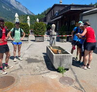
-
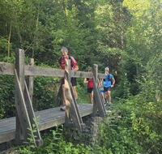
-
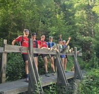
-
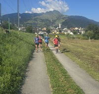
-
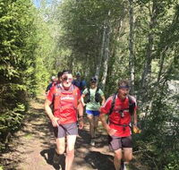
-
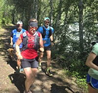
-
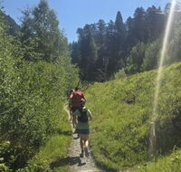
-
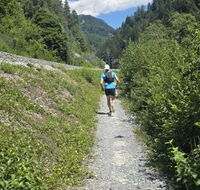
-
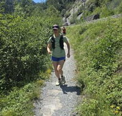
-
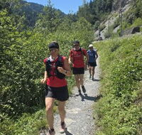
-
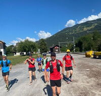
-
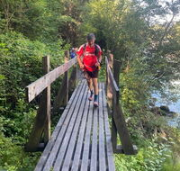
-
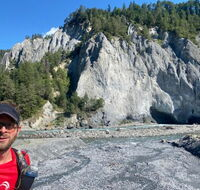
-
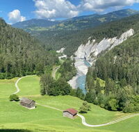
-
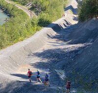
-
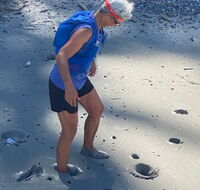
-
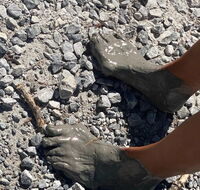
-
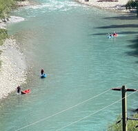
-
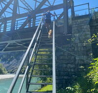
-
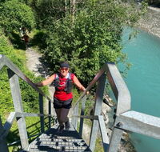
-
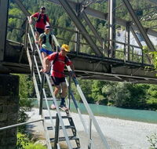
-
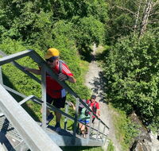
-
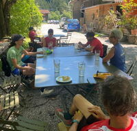
-
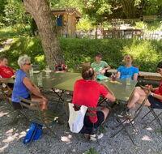
-
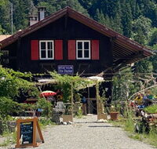
-
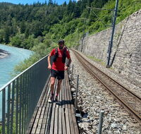
-
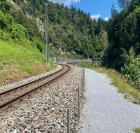
-
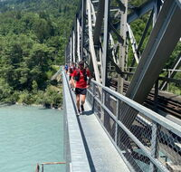